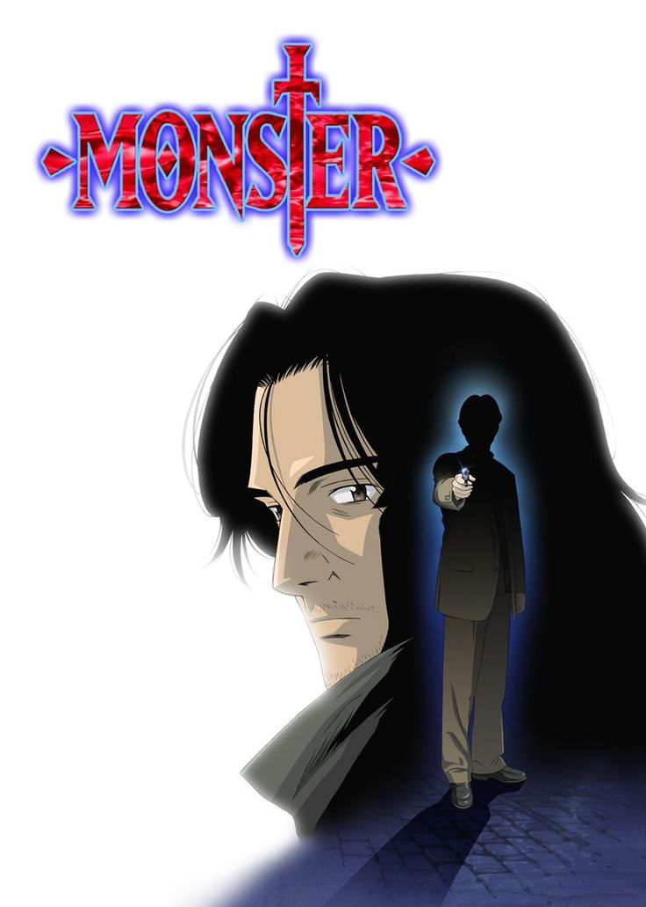
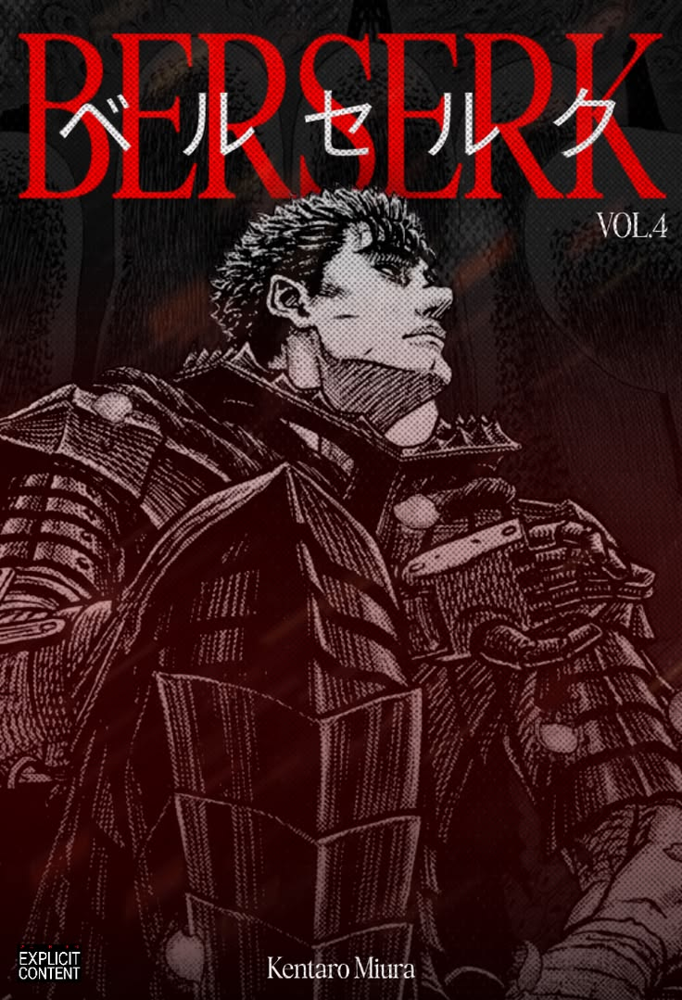

Monster
El Dr. Kenzo Tenma, un brillante neurocirujano japonés que trabaja en Alemania,
toma una decisión que cambia su vida al salvar a un niño llamado Johan Liebert
en lugar de operar a un importante político. Años después, Tenma descubre que
Johan se ha convertido en un asesino en serie y emprende una búsqueda para
detenerlo. La historia explora el bien, el mal, la culpa y hasta dónde puede
llegar una persona.

Berserk
Guts es un mercenario conocido por su enorme espada y su vida marcada por la
violencia. Después de unirse a la Banda del Halcón, liderada por el carismático
Griffith, encuentra por primera vez un propósito y compañeros en quienes confiar.
Sin embargo, la ambición de Griffith y una serie de acontecimientos trágicos
cambiarán para siempre el destino de Guts, dando inicio a una historia de guerra,
sacrificio y supervivencia.